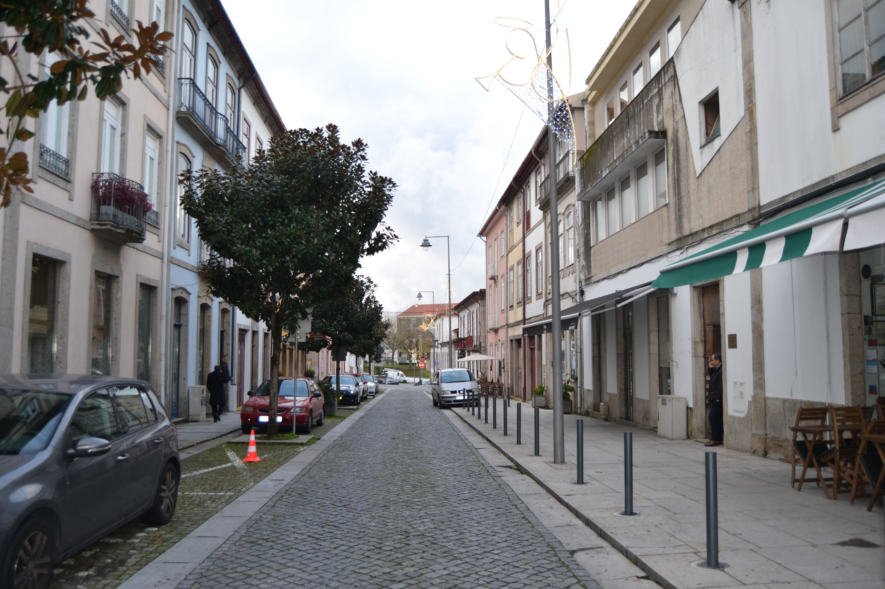

Travessa da Rua de D.Gualdim até ao Couto do Arvoredo
Fotos atuais


Fotos antigas

Travessa da Rua de Gualdim até ao Couto do Arvoredo - norte

Travessa da Rua de Gualdim até ao Couto do Arvoredo - sul
Descrição
Esta travessa, está atualmente integrada na rua D. Afonso Henriques.
Casas
| Número | Dono | Preço | Descrição |
|---|---|---|---|
| 2 | Padre José António Pereira | 290 reis e 2 galinhas | Corresponde ao n.º 1 da Rua de Santo António, para onde tem a frontaria e serventia principais. |
| 3 | N/A | N/A | Corresponde ao n.º 22 da Rua de Santo António, para onde tem a frontaria e serventia principais. |
| 4 | Inácio José Leite, ourives | 225 e reis e 3 galinhas | Fica situada nesta travessa «na parte que, à mão direita, liga a Rua das Chagas à Rua Verde». |
| 5 | N/A | N/A | Corresponde ao n.º 15 da Rua de D. Gualdim, para onde tem a frontaria e serventia principais. |